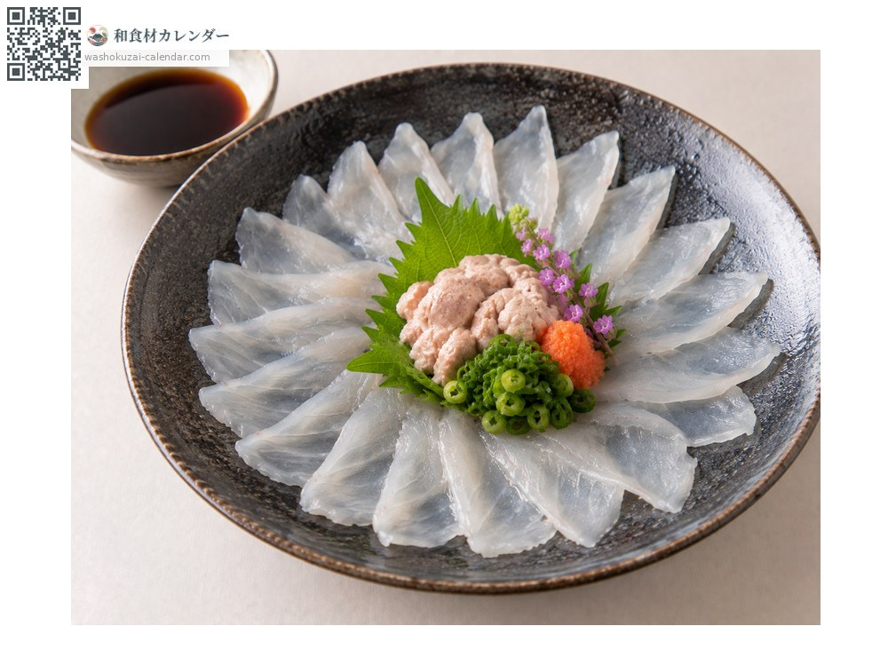
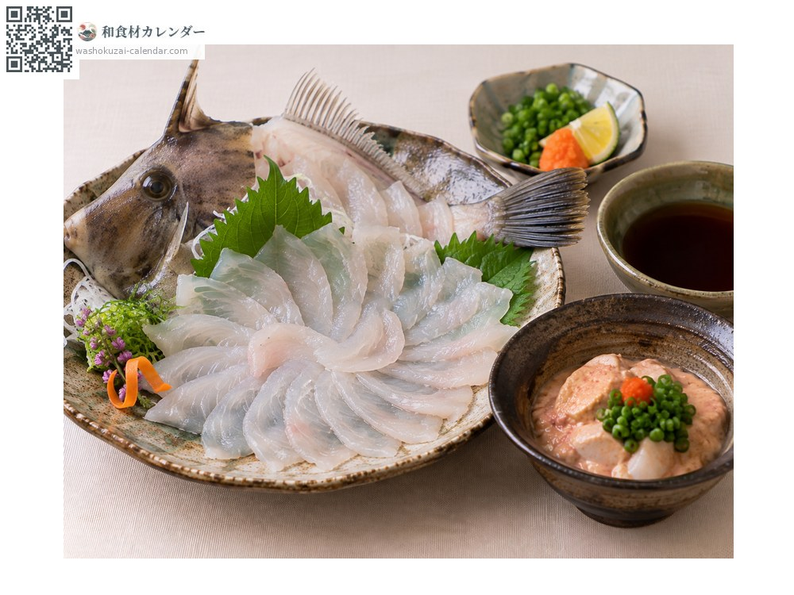
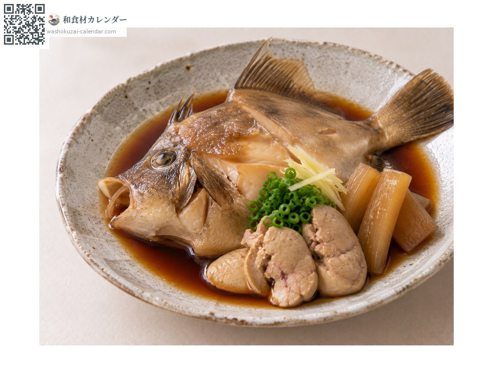
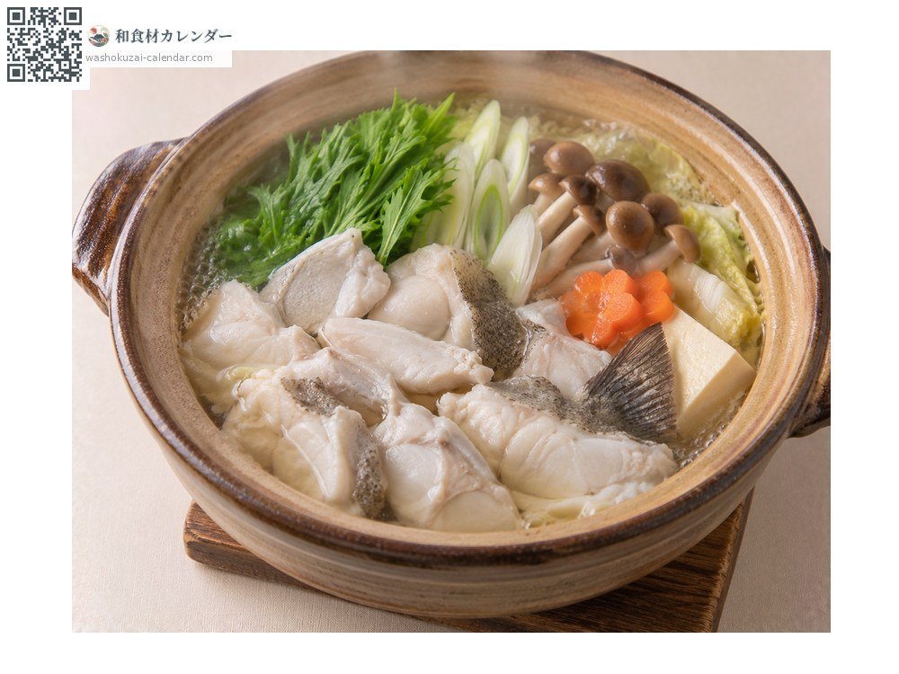

海鲜
剥皮鱼（马面鲀）
カワハギ かわはぎ
应季时期为1月、2月、10月、11月、12月

应季时期
1月
2月
3月
4月
5月
6月
7月
8月
9月
10月
11月
12月
应季有供应
烹饪方法

生鱼片
沾溶了鱼肝的酱油才是行家的吃法。

鱼肝拌生鱼片
生鱼片拌上鱼肝，风味浓郁。

甜酱油炖煮
以甜酱油炖煮。

火锅
清淡的鱼肉很能吸收汤头。
挑选方法
鱼肝大而饱满、鱼身紧实、眼睛清澈。
保存方法
剥皮取出内脏后冷藏。鱼肝另外存放并尽早使用。
主要产地
小知识
名字来自鱼皮容易剥除。冬天鱼肝肥美，有人称之为「海中的鹅肝」。